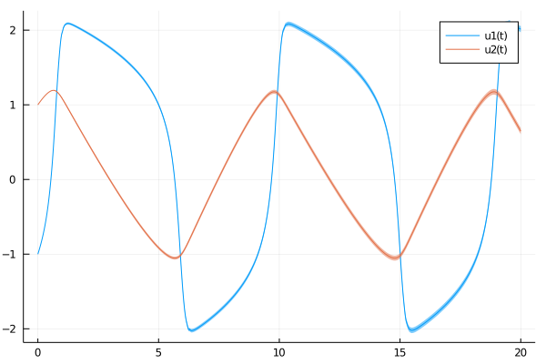

Getting Started
If you are unfamiliar with DifferentialEquations.jl, check out the official tutorial on how to solve ordinary differential equations.
Step 1: Defining a problem
First, we set up an ODEProblem to solve the Fitzhugh-Nagumo model.
using ProbNumDiffEq
function fitz(u, p, t)
a, b, c = p
return [c*(u[1] - u[1]^3/3 + u[2])
-(1/c)*(u[1] - a - b*u[2])]
end
u0 = [-1.0; 1.0]
tspan = (0., 20.)
p = (0.2,0.2,3.0)
prob = ODEProblem(fitz, u0, tspan, p)Step 2: Solving a problem
Currently, ProbNumDiffEq.jl implements two probabilistic numerical methods: EK0 and EK1. In this example we solve the ODE with the default EK0, for high tolerance levels.
sol = solve(prob, EK0(), abstol=1e-1, reltol=1e-2)Step 3: Analyzing the solution
Just as in DifferentialEquations.jl, the result of solve is a solution object, and we can access the (mean) values and timesteps as usual
julia> sol[end]
2-element Array{Float64,1}:
2.0141619320376365
0.6470035289822644
julia> sol.u[5]
2-element Array{Float64,1}:
0.21939865115492324
1.1918319025337822
julia> sol.t[8]
0.9316395737934081However, the solver returns a probabilistic solution, here a Gaussian distribution over solution values:
julia> sol.pu[end]
Gaussian{Array{Float64,1},ProbNumDiffEq.SquarerootMatrix{Float64,Array{Float64,2},Array{Float64,2}}}([2.0141619320376365, 0.6470035289822644], [0.0004261216112387373 0.0; 0.0 0.0004261216112387373])It is often convenient to look at means, covariances, and standard deviations via Statistics.jl:
julia> using Statistics
julia> mean(sol.pu[5])
2-element Array{Float64,1}:
0.21939865115492324
1.1918319025337822
julia> cov(sol.pu[5])
2×2 ProbNumDiffEq.SquarerootMatrix{Float64,Array{Float64,2},Array{Float64,2}}:
1.83412e-6 0.0
0.0 1.83412e-6
julia> std(sol.pu[5])
2-element Array{Float64,1}:
0.0013542971825724168
0.0013542971825724168By default, the posterior distribution can be evaluated for arbitrary points in time t by treating sol as a function:
julia> mean(sol(0.45))
2-element Array{Float64,1}:
-0.2779443252075745
1.1677425412790965Plotting Solutions
Finally, we can conveniently visualize the result through Plots.jl:
using Plots
plot(sol)/home/runner/.julia/packages/GR/9Vi4m/src/../deps/gr/bin/gksqt: error while loading shared libraries: libQt5Widgets.so.5: cannot open shared object file: No such file or directory connect: Connection refused GKS: can't connect to GKS socket application GKS: Open failed in routine OPEN_WS GKS: GKS not in proper state. GKS must be either in the state WSOP or WSAC in routine ACTIVATE_WS
